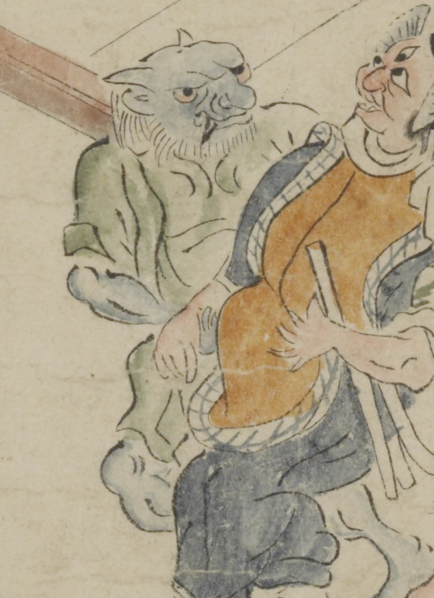

青い鬼。頭は潰れ、頭頂に2本の角を生やし、後頭部から髪を生やしている。額は割れ、目玉は丸く、鼻が大きい。顎ひげを生やしている。緑色の着物を着て、胸元を肌蹴ている。三つ目の鬼を脇から支えている。
著作者：坂本弥一郎徳定／出典：親書誌：U426_nichibunken_0080：伊吹山酒呑童子絵巻；イブキヤマシュテンドウジエマキ／日付：2007／資源識別子：U426_nichibunken_0080_0008_0008
Copyright (c)2010- International Research Center for Japanese Studies, Kyoto, Japan. All rights reserved.